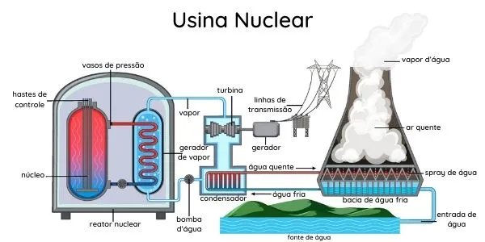

Para gerar eletricidade, uma usina nuclear usa um elemento químico, o urânio. Esse elemento é instável, isto é, ele vai aos poucos se transformando em outros elementos, liberando grande quantidade de energia térmica no processo.
Por causa dessa característica dizemos que o urânio é radioativo. No entanto certas radiações, inclusive a radiação liberada pelo urârio, podem ser muito perigosas, provocando doenças e outros problemas
O urânio pode passar por outros processos, como o usado na fabricação de bombas atômicas que, ao explodirem liberam uma quantidade imensa de energia.
Nas usinas nucleares, a energia térmica é usada para aquecer uma grande quantidade de água. Quando essa água se transforma em vapor, ela movimenta uma turbina que alimenta um gerador de eletricidade.
Vantagens
Fonte abundante na natureza (urânio)
Alta produtividade, isto é, uma pequena quantidade de combustível é capaz de gerar um montante alto de energia
Demanda pequena área para instalação da planta
Produz baixa quantidade de resíduos e dejetos
Não emite gases poluentes na atmosfera
Baixo custo de operação
Desvantagens
Fonte abundante na natureza (urânio)
Alta produtividade, isto é, uma pequena quantidade de combustível é capaz de gerar um montante alto de energia
Demanda pequena área para instalação da planta
Produz baixa quantidade de resíduos e dejetos
Não emite gases poluentes na atmosfera
Baixo custo de operação